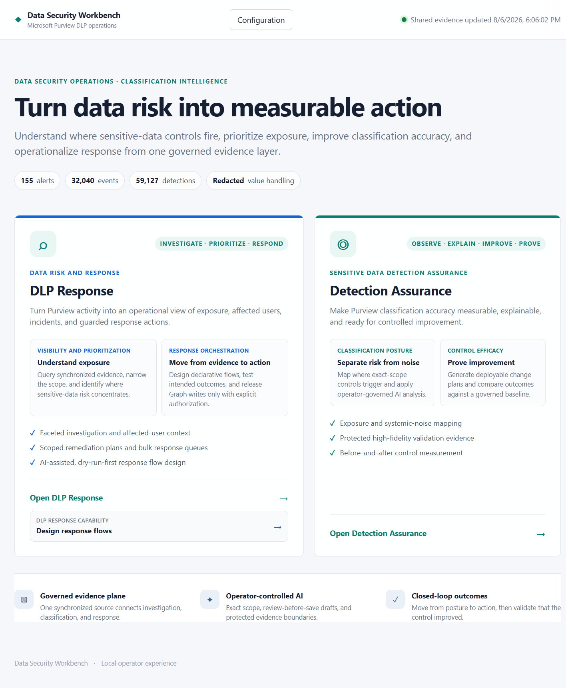
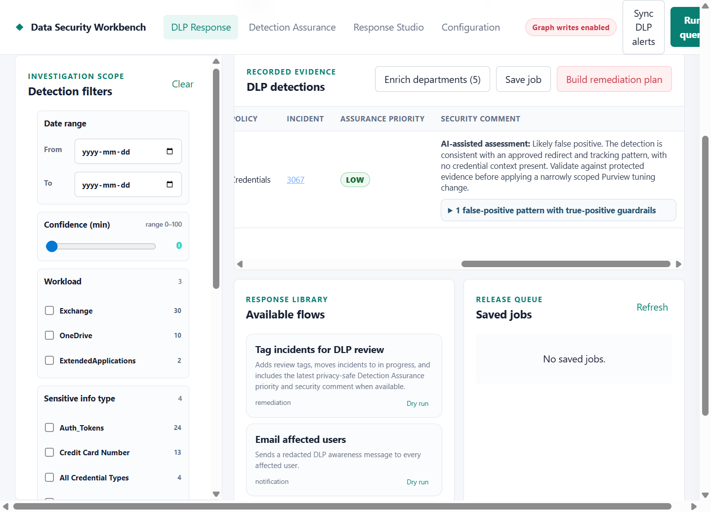
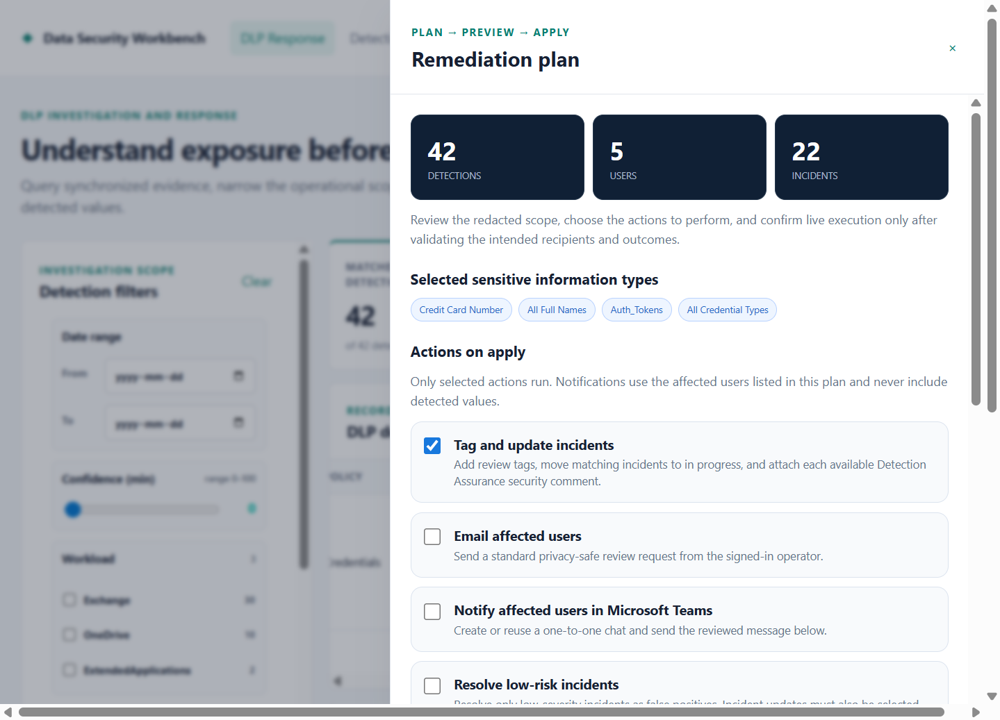
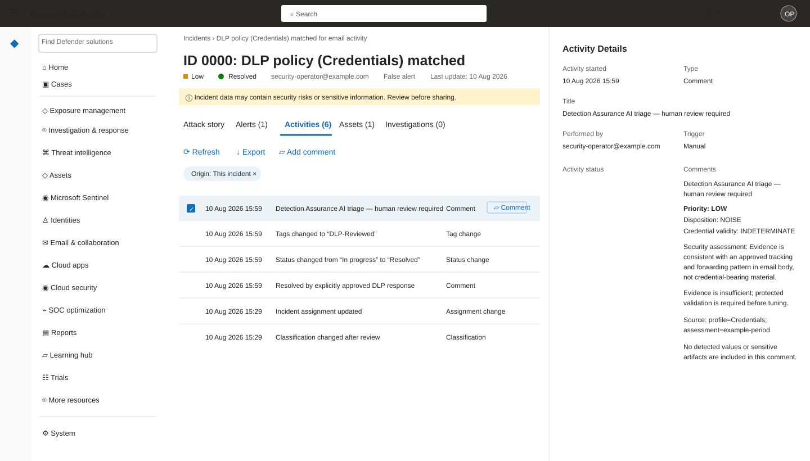

Open-source security operations
Introducing DLP Response Studio
A local-first workbench that turns Microsoft Purview DLP alert volume into explainable detection assurance, reviewable response plans, and deliberately controlled action.
The problem
DLP operations need more than another alert queue
Microsoft Purview can surface the activity that matters, but security teams still have to connect alerts to event evidence, understand why a Sensitive Information Type fired, identify the right business owner, decide what should change, and respond without exposing the data they are trying to protect.
That work is often split across scripts, exports, spreadsheets, portals, and one-off analyst knowledge. The result is familiar: alert volume grows faster than confidence, tuning decisions are hard to defend, and remediation becomes either too cautious to help or too broad to trust.
The goal is not simply to process more alerts. It is to make detection quality and response safety measurable operational controls.
The tool
One workbench, three connected jobs
Query DLP evidence locally
Synchronize Purview DLP alerts and events into JSONL, then filter by policy, workload, SIT, confidence, user, incident, location, and Graph-resolved department.
Explain detection behavior
Run exact-SIT, period-bounded assessments that identify signal, noise, concentration, ownership, validation needs, false-negative guardrails, and measurable tuning opportunities.
Move from evidence to action
Build declarative response flows for incident updates, reviewed comments, email, and one-to-one Teams notifications—with dry runs and explicit live gates.

The operating model
From observation to proof
Detection Assurance treats classification tuning as a closed-loop lifecycle rather than a one-time model opinion.
Define
Select the exact SIT boundary, policy scope, business intent, known noise, and false-negative constraints.
Assess
Analyze a bounded baseline period using redacted organizational context or explicitly protected sensitive evidence.
Improve
Translate findings into a reviewable Purview change plan with validation, ownership, monitoring, and rollback steps.
Verify
Run the same profile after implementation and compare the later period with the original baseline.
From finding to controlled response
Keep the rationale beside the action
Detection Assurance can return a bounded priority and privacy-safe security comment for each correlated incident. DLP Response keeps that rationale visible during investigation and can include the reviewed comment when an operator deliberately selects an incident update.



The Defender handoff demonstrates the complete operational path: assess evidence in DLP Response Studio, review the proposed action, write through Microsoft Graph only after confirmation, and keep the result in the analyst system of record. That makes the outcome easy to explain in customer and account-team conversations without requiring analysts to adopt a separate incident queue.
Practical value
Designed for the decisions teams actually make
Connect incidents to governed evidence, prioritize review, and keep response actions consistent and auditable.
Find where detections concentrate, involve the right departments, and reduce avoidable noise without weakening real coverage.
Review explicit changes, test them against evidence, retain rollback criteria, and demonstrate control improvement over time.
Safety by design
Useful AI without an uncontrolled data boundary
The default assessment mode excludes detected values, identities, recipients, content names, senders, and subjects from the AI payload.
Microsoft Graph access
Permission is tied to purpose
Workers authenticate interactively as the operator and request delegated permissions for the operation being performed. The project stores no Graph access tokens or client secrets.
| Operation | Delegated permissions | Mode |
|---|---|---|
| DLP evidence synchronization | SecurityAlert.Read.All, SecurityEvents.Read.All, CustomTags.Read.All | Read |
| Department enrichment | User.Read.All | Read |
| Incident updates and comments | SecurityIncident.ReadWrite.All | Read/write |
| Affected-user email | Mail.Send | Send |
| One-to-one Teams notification | Chat.Create, ChatMessage.Send, User.ReadBasic.All | Create/send/read |
Why open source
Security controls should be inspectable
DLP Response Studio is deliberately straightforward: Node.js, static browser assets, PowerShell workers, JSONL persistence, no runtime npm dependencies, and an MIT license.
Teams can inspect every Graph request, every scope, every redaction boundary, every AI instruction, and every live-action gate. They can adapt profiles to their own classification intent without accepting opaque execution or a hosted data path.
This is a starting point for practitioners who want a transparent bridge between Purview evidence, AI-assisted assurance, and human-controlled response—not a replacement for organizational review, Microsoft Purview administration, or incident-response judgment.
Start locally
Turn your next DLP review into a measurable control cycle
Install Node.js 20, PowerShell 7, and the Microsoft Graph authentication module. Start the local workbench, synchronize DLP evidence, and begin with queries and dry runs. Live actions remain locked until deliberately enabled.